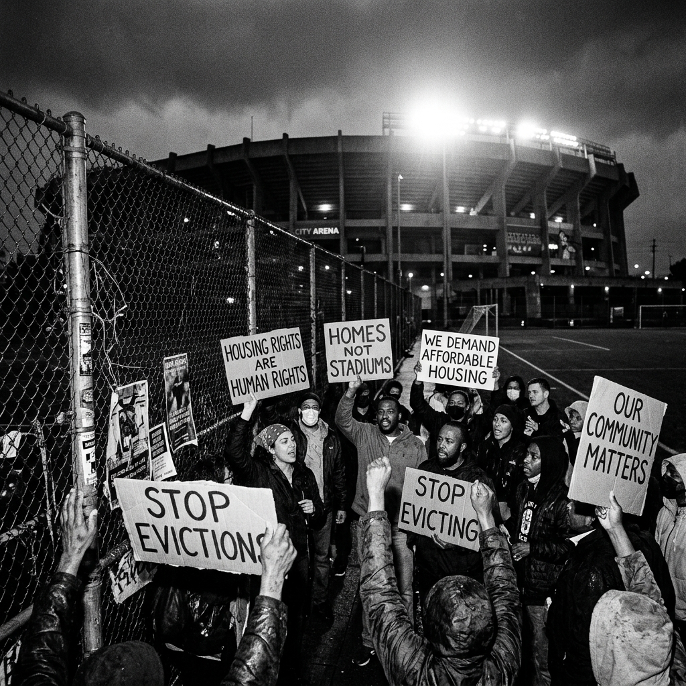

Ciudad Juárez
Frontera y Derechos Humanos
Redes locales e iniciativas comunitarias en Anapra y zonas periféricas dedicadas a documentar desalojos, registrar la historia oral de la comunidad y ofrecer asesoramiento vecinal básico.
Herramientas organizativas y legales para enfrentar la especulación inmobiliaria y defender tu vecindario.
Ningún mega-evento corporativo debería estar por encima del derecho fundamental a la vivienda y al arraigo comunitario. Las victorias más importantes frente a la gentrificación inducida se han logrado mediante la organización colectiva e independiente de los propios inquilinos.
A continuación, recopilamos un listado directo de sindicatos activos, redes comunitarias de resistencia urbana y defensorías legales organizadas para cada una de las tres sedes expuestas en nuestro periodismo transmedia.

Frontera y Derechos Humanos
Redes locales e iniciativas comunitarias en Anapra y zonas periféricas dedicadas a documentar desalojos, registrar la historia oral de la comunidad y ofrecer asesoramiento vecinal básico.
Sindicato de Inquilinos (LATU)
El *Los Angeles Tenants Union* ofrece asambleas semanales de organización comunitaria, asesoría legal frente a notificaciones de desalojo injustas e iniciativas de huelga de renta.
Derechos Territoriales e Indígenas
Redes colectivas de las naciones originarias Musqueam, Squamish y Tsleil-Waututh consagradas a proteger los territorios ancestrales no cedidos frente al avance comercial del Mundial.